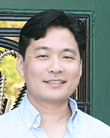
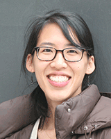
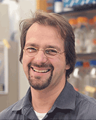

News Archives : 2016 : MCB Welcomes Three Preceptors
by Cassie Martin
January 15, 2016
MCB is pleased to welcome three new preceptors to the department. Preceptors are full-time equivalent faculty members who are passionate about education and teaching at the university level. Dominic Mao, PhD; Jessica Liu, PhD; and Sven Heinrich, PhD, will join Aaron Garner PhD, Laura Magnotti, and Casey Roehrig in the department. They play an integral role in student education and development by mentoring students, providing training to teaching fellows, and helping to develop and execute large lecture courses, course materials, and innovative lab modules.
Here are brief biographies of the new preceptors and their reflections on their new roles.

Dominic Mao, PhD
Course: MCB 60 - Cellular Biology and Molecular Medicine
Course Instructors: Vlad Denic and Alex Schier
MCB 68 - Cell Biology Through the Microscope
Course Instructors: Ethan Garner and Jeff Lichtman
Graduate School: University of Cincinnati
Advisor: Dennis Grogan
Doctoral Thesis: Genetic fidelity and genome stability in the hyperthermophilic archaeon Sulfolobus acidocaldarius
Postdoctoral Research: Investigating the free radical theory of aging using Bdelloid rotifers with Matthew Meselson at Harvard University
Dominic Mao was born and raised in India, where he completed a Bachelor’s and Master’s degree in biochemistry before coming to the United States to pursue a PhD. His doctoral work at the University of Cincinnati investigated genome stability, including DNA repair and recombination, in a microbial species that lives in acidic hot springs, like those found in Yellowstone national park – conditions known to accelerate DNA damage and destabilize biomolecules. This research eventually led him to a postdoctoral fellowship in Matthew Meselson’s Lab at Harvard, investigating the free radical theory of aging by exploiting Bdelloid rotifers’ extreme resistance to ionizing radiation.
“I discovered my affinity for teaching very early in my scientific training and was fortunate to have mentors who encouraged me to teach,” said Mao. “The preceptor position is perfect at this point in my teaching career as it allows me hands-on involvement with the inner workings of courses, expands my repertoire in terms of content, and I constantly get to learn best practices in designing and setting up my own courses in the future.”
Mao has been a preceptor for MCB 60 since the fall of 2015. His duties include maintaining the course website, preparing problem sets and assessments, designing, managing and executing the course’s laboratory segment; and training and coordinating teaching fellows, among other duties.
“I am very excited about lecturing under the mentorship of Alex Schier in the fall of 2016,” Mao said. “One of the many highlights of my job is the opportunity to meet with students regularly to chat about the course (one cannot overstate the value of their feedback), research, and careers. Some drop by my office just to pet my dog and take a breather from the rigors of their academic commitments.”

Jessica Liu, PhD
Courses: MCB 63- Biochemistry and Molecular Medicine
Course Instructors : Alain Viel and Rachelle Gaudet
MCB 64 - The Cell Biology of Human Life in the World
Course Instructor: Robert Lue
Graduate School: Harvard University
Advisors: David Jeruzalmi and then Timur Yusufzai
Doctoral Thesis: Biochemical Characterization of the Domain Architecture of Chromatin Assembly Motor Proteins Human CHD1 and CHD2
Postdoctoral Research: Development of small-molecule high-throughput screen to search for inhibitors of Pol-theta ATPase activity, with Alan D’Andrea at Harvard Medical School and Dana-Farber Cancer Institute
Originally from Texas, Jessica Liu holds a Bachelor’s degree in Biochemistry from The University of Texas at Austin and recently completed her PhD in Biochemistry at Harvard University in the labs of Professors David Jeruzalmi and then Timur Yusufzai.
For her dissertation, Liu used a biochemical approach to characterize members of the CHD family—a group of proteins suspected to play key roles in regulating chromatin structure throughout mammalian development. Her main focus was on dissecting the domain architecture of CHD2, a protein of unknown function and the loss of which is correlated with neurological disorders.
“Many factors led to my decision to pursue a career in education,” said Liu. “In my last few years as a graduate student, I taught inquiry-based discovery workshops to middle and high school students at the MIT Museum. There, I realized how rewarding it is to play a role in getting students excited about what science can do.”
After completing her graduate program in 2015, Liu began a part-time postdoctoral position in the D’Andrea Lab where she found herself mentoring many undergraduates and fellow postdocs. She also continued teaching part-time at the MIT Museum. “In that transition year, I realized I care more about the mentoring of the individuals doing the science than actually doing the science myself,” she said.
Liu will be the preceptor for MCB courses 63 and 64, which are led by Alain Viel and Robert Lue, respectively. “I have the chance to learn from two professors who care greatly about changing the face of how science is taught in the classroom,” she said. “These courses are aimed at showing students how much science impacts our day-to-day lives while also implementing innovative ways to engage students in the course material.”
As preceptor, Liu will handle administrative aspects of the course, oversee a team of teaching fellows, and ensure the course is engaging and educational for students. “I am passionate about science because I love hearing scientists’ stories,” she said. “I am fascinated by the ways humanity intersects with science; science is supposed to be an objective, unbiased study of the natural world, and yet scientists have to make subjective decisions every day. Moreover, ‘objective’ scientific discoveries profoundly impact people globally, and it is important for students to understand this.”

Sven Heinrich, PhD
Course: LS1a - An Integrated Introduction to the Life Sciences: Chemistry, Molecular Biology, and Cell Biology
Course Instructors: Robert Lue, Rich Losick, Dan Kahne, and Susan Mango
Graduate School: Humboldt University and Harvard Medical School
Advisor: Tom Rapoport
Doctoral Thesis: Mechanisms of Protein Integration into the Endoplasmic Reticulum Membrane
Postdoctoral Research: Exploring prion-driven epigenetic states involved in learning and memory using yeast model systems with Susan Lindquist at the Whitehead Institute for Biomedical Research
Sven Heinrich has always been interested in explaining the physical world on a molecular level. During his high school years in Berlin, Germany, Heinrich and a friend—under the guidance of a faculty member— designed an introductory course examining physical, chemical, and biological evolution. They called it From the Big Bang to Homo sapiens. “We were surprised by how many people signed up for the class and were breathlessly teaching our hearts out for three straight days,” he said. “This early experience of the joys of teaching has never left me, and I decided to start studying Biochemistry at the Free University in Berlin.”
He eventually earned Bachelors and Master’s degrees in chemistry and biochemistry from the university, the latter of which was under the advisement of Tom Rapoport of Harvard Medical School. For his PhD, Heinrich joined Rapoport’s lab in the Department of Cell Biology, investigating the mechanism of protein integration into cells’ endoplasmic reticulum membrane. “We suggested a unifying, lipid-partitioning model, which can explain in great detail how the protein-conducting channel Sec61 recognizes transmembrane segments, orients them properly with respect to the plane of the membrane and releases them into lipid,” Heinrich said. “Additionally, we determined the architecture of the native ribosome-Sec61 channel complex by electron cryo-microscopy.”
After earning his PhD, Heinrich left Harvard for a postdoctoral fellowship studying prion folding in Susan Lindquist’s lab at the Whitehead Institute. Prions are infectious proteins that when folded unconventionally can lead to various cell dysfunctions and degenerative neurological diseases in sheep, goats, cows, cervids, and humans. “It came as a surprise that this same prion fold can also carry out beneficial biological functions in the cell,” he said. Heinrich examined how a protein involved in learning and memory takes advantage of a regulatable prion switch to create long-lasting molecular memory.
During this time, Heinrich also served as a teaching fellow for the Harvard life sciences courses LS1a and LS1b. “I was thrilled to realize how rewarding teaching students is,” he said. “Especially when you can literally hear the “click” in a student’s brain after understanding an important concept.”
Heinrich will work as preceptor for the course where he first began teaching, LS1a. “While I greatly appreciated the intellectual puzzle and detective work that scientific research can be, I always enjoyed communicating my research, which is such an important part of science,” he said. Along with his fellow
LS1a preceptor Aaron Garner, Heinrich will work to seamlessly integrate chemistry and biology so that the science is accessible, engaging, and intuitive for students.
“The teaching philosophy and design of LS1a exemplify to me how basic science should be taught to generate most enthusiasm in our students and fuel their fascination of how the physical world can be explained,” he said. “I wish I could have taken LS1a as a student.”
Read about all MCB preceptors